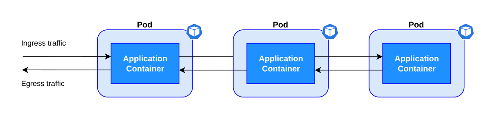
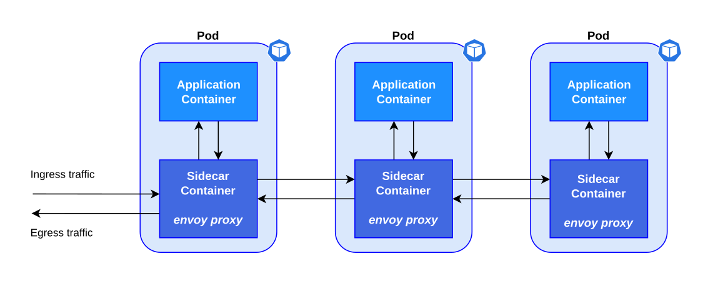
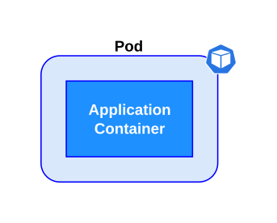
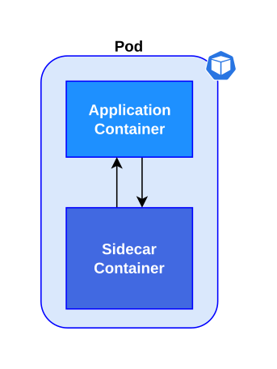
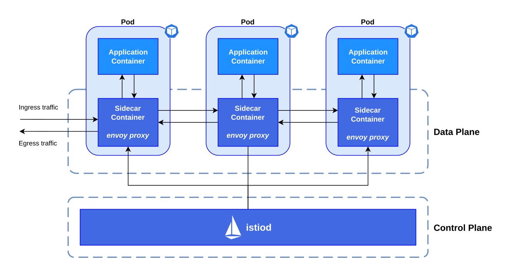

Istio
Istio is an ingress controller and a service mesh implementation for Kubernetes. It abstracts the traffic management logic from the application by using a sidecar container that manages all the incoming and outgoing network traffic for a pod.
Before istio, applications had to manage all the advanced network operations, retry logic and resiliency, adding complexity to the main logic.
| Before Istio: Application with all the traffic managment logic |
|---|

|
Istio injects a sidecar container that intercepts the ingress and egress traffic, controlling the communication between the application, the clients and the Kubernetes services.
| After Istio: Application with sidecar container |
|---|

|
Istio implements the following features:
-
Inter-service communication
-
Service discovery
-
Load balancing
-
Resiliency
-
Metrics
-
Tracing
-
Fault injection
-
Mutual TLS
What is a sidecar container?
The sidecar container is an extra container that is added to a pod, this extra container handles a set of specialized operations to add features to an existing application without altering it. The pattern name is inspired in the sidecar that is attached to a motorcycle, because the sidecar container is attached to the pod and connected to the main application.
Kubernetes defines the pod as the minimum unit that can be created and managed. A pod can execute one or more containers in a context where namespaces, network, and volumes are shared between them. Using a single container per pod is a common use case in which the application has all of the resources assigned to the pod.
| Pod with a single container |
|---|

|
Sometimes the application consists of multiple containers that are related to each other and need to share resources like network or storage. The Istio sidecar container manages the network traffic, and the main container has the application logic.
| Pod with a sidecar container |
|---|

|
What is a Service Mesh?
The term service mesh refers to a technology used to manage communication between the microservices in an application. It provides components such as traffic management, retry logic, metrics, and security. Those components can be added to the application via a sidecar container that implements all extra features and serves as a proxy for the ingress and egress traffic of the pod.
Istio components
Istio has two main components, a control plane that manages the configuration and a data plane that handles the communication between services.
| Istio control plane and data plane |
|---|

|
- Control plane
-
The control plane injects the sidecar containers in the application pods. It also manages the envoy proxies by sending the configuration updates as needed. The envoy proxies do not need to contact the Istio control plane after they are configured.
- Data plane
-
All envoy proxies are interconnected in the service mesh. Each proxy intercepts the network traffic directed to a pod and applies routing rules and redirects the ingress request to the application container, or egress request to the appropriate service.
Istio installation options
There are various methods to install MetalLB in a Kubernetes cluster.
-
Install the Istio release with the
istioctltool. -
Add the chart repository and deploy the
istio/base,istio/istiodcharts withhelm. You can enable the ingress gateway by installing theistio/gatewaychart. -
Install with the Multicluster deployment model to set up Istio in multiple Kubernetes clusters.
-
Install the Istio Operator with
istioctlorhelm. -
Enable the
istio-provisioner, andistioadd-ons in minikube.
|
Note
|
Minikube provides Istio as an add-on. However, the version is outdated and can’t be installed in recent versions of Kubernetes. |
Istio installation profiles
Istio can be installed with different features turned on or off depending on the environment that will be deployed.
You can execute istioctl profile dump to inspect the details of the current profile.
- Default
-
Enables the default settings, it is recommended for production deployments.
- Demo
-
Enables features to demonstrate tracing and the example applications. It requires many resources.
- Minimal
-
Only install the control plane components to manage an external cluster.
- External
-
Install the components on a cluster that will be managed with an external control plane.
- Empty
-
It is an empty profile with all features disabled, it can be used to create custom configurations.
- Preview
-
Enables experimental features that are not stable.
Istio add-ons
The add-ons for Istio are installed from the samples/addons directory of the Istio release archive.
-
Kiali
-
Grafana
-
Prometheus
-
Jaeger
Installing Istio in Minikube
Istio requires at least 4 vCPUs and 8 GB of RAM to run correctly in minikube.
[user@host kbe]$ minikube start --cpus=4 --memory=8g
...output omitted...|
Note
|
The Istio minikube add-on is outdated and can’t be installed in recent versions of Kubernetes. |
Download the Istio release archive from GitHub, and install the istioctl tool.
Then verify if the cluster meets the installation requirements.
[user@host kbe]$ istioctl experimental precheck
✔ No issues found when checking the cluster. Istio is safe to install or upgrade!
To get started, check out https://istio.io/latest/docs/setup/getting-started/Install Istio in the Kubernetes cluster using the appropriate profile for your deployment.
[user@host kbe]$ istioctl install --set profile=demo -y
✔ Istio core installed
✔ Istiod installed
✔ Egress gateways installed
✔ Ingress gateways installed
✔ Installation complete
Making this installation the default for injection and validation.
Thank you for installing Istio 1.12.
Please take a few minutes to tell us about your install/upgrade experience!
https://forms.gle/FegQbc9UvePd4Z9z7Istio Ingress Gateway Endpoint
The Istio ingress gateway endpoint depends on the configuration of the underlying service. Istio provides ports for HTTP and HTTPS connections.
The Istio installation guided exercise uses MetalLB to manage the ingress gateway load balancer service endpoint.
[user@host kbe]$ kubectl get services -n istio-system
NAME TYPE CLUSTER-IP EXTERNAL-IP PORT(S) AGE
istio-egressgateway ClusterIP 10.111.169.103 <none> 80/TCP,443/TCP 5m
istio-ingressgateway LoadBalancer 10.97.37.96 192.168.59.20 80:32031/TCP,443:31872/TCP,... 5m
istiod ClusterIP 10.103.227.204 <none> 443/TCP,15010/TCP,15012/TCP,15014/TCP 6m|
Note
|
If Istio was installed using |
- Node port
-
The IP address of a node, and a port number.
export INGRESS_HOST=$(kubectl get node ${NODE_NAME} \ -o jsonpath='{.status.addresses[?(@.type=="InternalIP")].address}') export INGRESS_PORT=$(kubectl get service ${INGRESS_SERVICE} \ -n ${INGRESS_NAMESPACE} \ -o jsonpath='{.spec.ports[?(@.name=="http2")].nodePort}') export SECURE_INGRESS_PORT=$(kubectl get service ${INGRESS_SERVICE} \ -n ${INGRESS_NAMESPACE} \ -o jsonpath='{.spec.ports[?(@.name=="https")].nodePort}') - Load balancer
-
The IP address of a load balancer is provided by the cloud controller.
export INGRESS_HOST=$(kubectl get service ${INGRESS_SERVICE} \ -n ${INGRESS_NAMESPACE} -o jsonpath='{.status.loadBalancer.ingress[0].ip}') export INGRESS_PORT=$(kubectl get service ${INGRESS_SERVICE} \ -n ${INGRESS_NAMESPACE} -o jsonpath='{.spec.ports[?(@.name=="http2")].port}') export SECURE_INGRESS_PORT=$(kubectl get service ${INGRESS_SERVICE} \ -n ${INGRESS_NAMESPACE} -o jsonpath='{.spec.ports[?(@.name=="https")].port}') - External name
-
The endpoint is published as a DNS CNAME record.
export INGRESS_HOSTNAME=$(kubectl get service ${INGRESS_SERVICE} \ -n ${INGRESS_NAMESPACE} \ -o jsonpath='{.status.loadBalancer.ingress[0].hostname}')
Sidecar Container Injection
The istio-proxy sidecar container can be manually injected in different ways.
The YAML resource manifest can be modified with istioctl to add the istio-proxy container to the pod definition.
You can create the resource using the modified YAML manifest.
[user@host kbe]$ istioctl kube-inject -f deployment.yaml \
-o deployment-injected.yamlAnother option is to modify and apply the YAML resource manifest in a single step.
[user@host kbe]$ kubectl apply -f <(istioctl kube-inject -f resource.yaml)You can also modify a resource that already exists on the cluster by exporting it to YAML, pipe the output to istioctl to inject the sidecar container definition, and then apply the patched resource to update.
[user@host kbe]$ kubectl get deployment -o yaml | \
istioctl kube-inject -f - | kubectl apply -f -Enable automatic sidecar injection
Istio can automatically inject the sidecar container definition into the pods of a namespace. You have to apply a label to the namespace to enable this feature.
[user@host kbe]$ kubectl label namespace default \
istio-injection=enabled --overwrite
namespace/default labeledNew pods will have the istio-proxy container after the label is applied to the namespace.
[user@host kbe]$ kubectl get pods -l app=nginx \
-o jsonpath='{.items[0].spec.containers.*.name}{"\n"}'
nginx istio-proxyYou can roll out an existing deployment to deploy new pods.
[user@host kbe]$ kubectl rollout restart deployment nginx
deployment.apps/nginx restartedRemove the label from the namespace to disable the automatic sidecar injection for new pods.
[user@host kbe]$ kubectl label namespace default istio-injection-
namespace/default labeled|
Note
|
The dash at the end of the command is used to instruct |
References
|